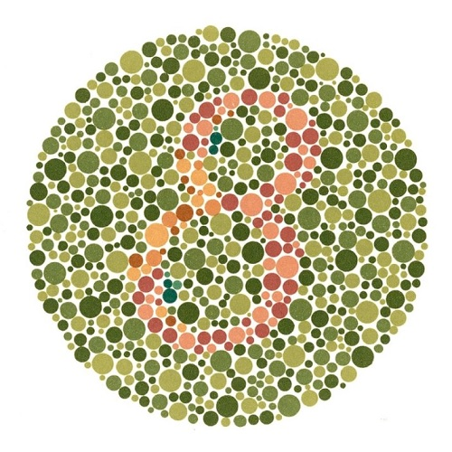

Test de daltonismo
El objetivo del siguiente test es que compruebe en unos pocos minutos si puede padecer o no algún tipo daltonismo respondiendo a unas sencillas preguntas.
Para ello se le mostrarán una serie de imagenes y deberá indicar que número ve para finalmente mostrarle si padece algún tipo de daltonismo o problema visual.

¿Qué numero ves?
Pregunta 1/10